| МАЙ | ||
| Ежегодная выставка «Тарусские художники» (живопись, графика, скульптура, прикладное искусство) | 8 мая, 15:00 | Картинная галерея |
| Праздничные мероприятия, посвященные 70-летию Великой Победы в Великой Отечественной войне 1941-1945г.г. | 9 мая | Городская площадь, Центр досуга населения |
| Выставка «М. Цветаева. Планета людей» Работы художницы Н. Кокоревой (г. Москва) | 16 мая | Музей семьи Цветаевых |
| Интерактивная программа «Ночь в музее» | 16 мая, 18:00-22:00 | Краеведческий музей |
| Открытый Тарусский фестиваль-конкурс славянской письменности «Благословенная Тарусская земля» | 23-25 мая | Центр досуга населения |
| Джазовый фестиваль Игоря Бутмана | май | Киноконцертный зал |
| Персональная выставка А. Романова (живопись, графика), г. Обнинск | май | Картинная галерея |
| XXIV Праздник К.Г. Паустовского, посвященный 123-й годовщине со дня рождения писателя. | 31 мая | Киноконцертный зал, музеи г. Тарусы |
| Выставка «За красоту родной Земли» (выставка работ семьи художников Пилипенко (г. Таруса)), посвященная 123-й годовщине со дня рождения К.Г. Паустовского | 31 мая | Краеведческий музей |
| ИЮНЬ | ||
| Праздник «Город детства», посвящённый Дню защиты детей. | 1 июня | Городская площадь, Центр досуга населения |
| Выставка «Мои удивления». Работы Н. Антюховой, г. Москва | 6 июня | Музей семьи Цветаевых |
| Персональная выставка А. Кузнецовой ( живопись, графика) МОСХ | 6 июня, 15:00 | Картинная галерея |
| V Детский фестиваль «Петухи и гуси в городе Тарусе»-2015 | 13-14 июня | Тарусский ТИЦ, улицы города, Центр досуга населения, Городская площадь |
| Персональная выставка В. Пугачёва (живопись), г. Обнинск | 13 июня, 15:00 | Картинная галерея |
| Мероприятия, посвящённые Дню памяти и скорби. Акция «Свеча памяти» | 21-22 июня | Городская площадь |

Администрация муниципального района
"ТАРУССКИЙ РАЙОН"
"ТАРУССКИЙ РАЙОН"
АНОНСЫ
СОБЫТИЯ
Открытие туристического сезона
1 апреля известные путешественники и популярные артисты по приглашению Тарусского туристско-информационного центра посетили наш город. Они осмотрели памятные места Тарусы, с удовольствием прогулялись по центральной площади, посетили Картинную галерею, магазин сувениров «Ксюша» и подружились с жителями. Узнав о юбилее директора музея семьи Марины Цветаевой, сердечно поздравили Елену Михайловну Климову с круглой датой.
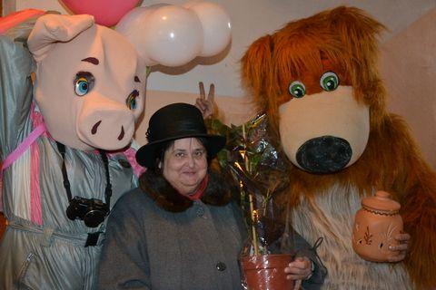 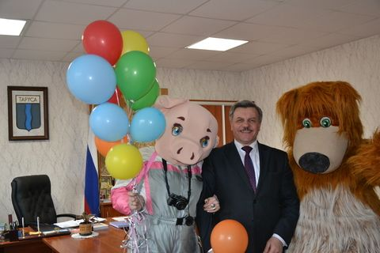 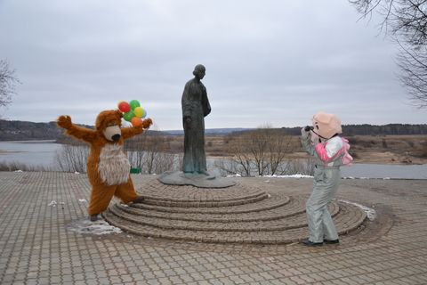 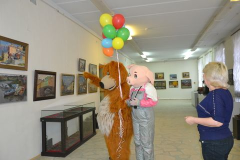 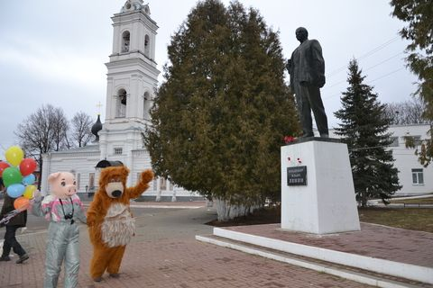 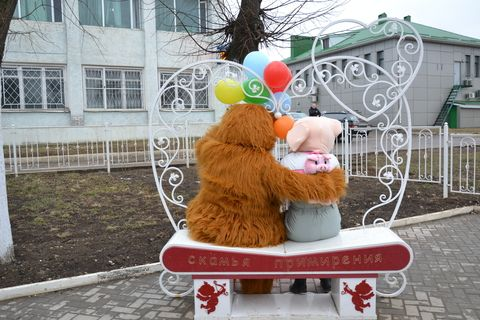Свой отдых туристы продолжили на территории отеля WELNA.
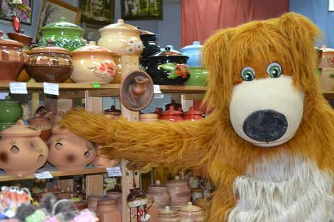 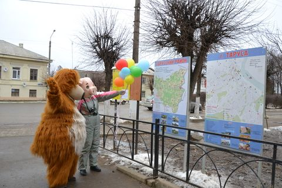 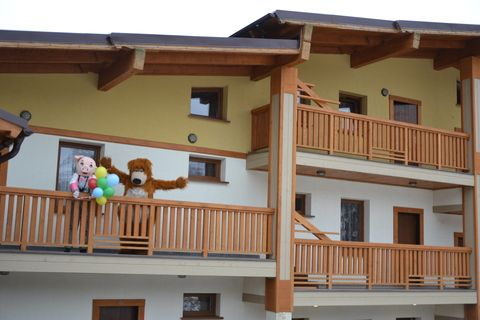 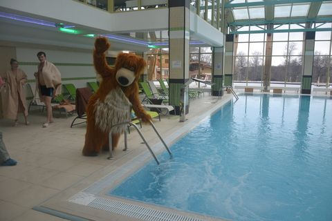 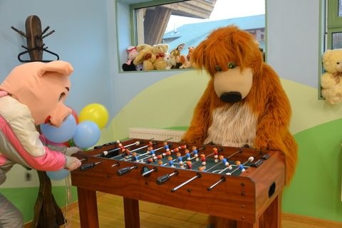 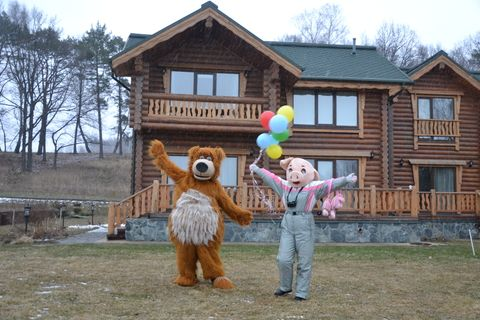 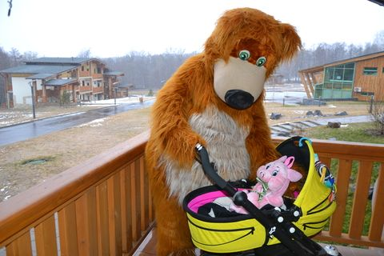 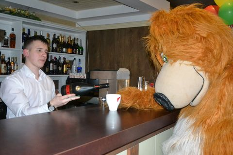 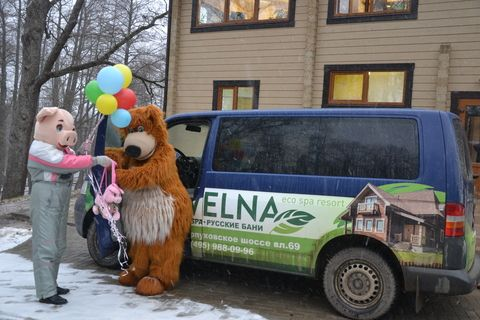Покидая наш гостеприимный город, гости обещали обязательно вернуться.
Статья и фото - И.И. Павловец.
Потенциал туриндустрии Тарусского района был представлен на международных выставках «Интурмаркет» и «Путешествия и туризм»
В марте в Москве прошли традиционные международные туристические выставки. Потенциал туриндустрии Тарусского района уже в четвертый раз представили сотрудники Тарусского туристического центра.
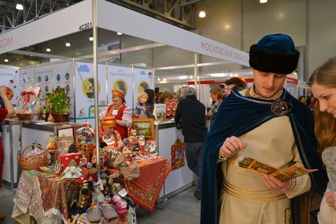 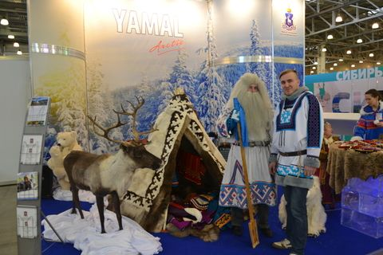«ИНТУРМАРКЕТ» — главная туристская выставка страны, которая официально поддержана Министерством культуры Российской Федерации, Федеральным агентством по туризму. Ее проведение способствует развитию туристической индустрии в России и отвечает интересам всех участников туристического рынка, как российских так и зарубежных. Выставка ориентирована на работу с профессиональной аудиторией и продвинутыми путешественниками. Организаторы выставки создали благоприятные условия работы в Международном Выставочном Центре «Крокус Экспо», отвечающем всем современным стандартам. За время проведения выставку посетили более 80 тысяч гостей и более 350 журналистов. В рамках деловой программы выставки директор АУ ТР по туризму «Тарусский ТИЦ» И.И. Павловец выступила с презентацией сайта туристско-информационного центра Тарусы: visit-tarusa.ru.
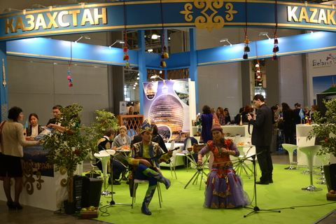 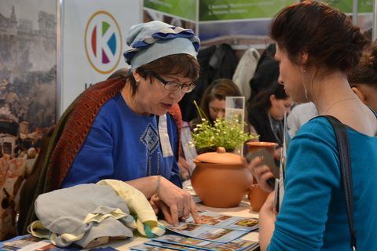Московская международная выставка «ПУТЕШЕСТВИЯ И ТУРИЗМ» (MITT) проходила в выставочных залах «Экспоцентра» .Привлекая сотни зарубежных туроператоров и тысячи представителей туристического бизнеса из-за рубежа, именно эта выставка определяет потенциал въездного туризма и является настоящей «витриной» туристических возможностей России. На MITT приезжают «открывать Россию», поэтому участие в этой весенней туристической выставке в Экспоцентре создает неограниченные перспективы для развития туристической отрасли в российских регионах. Продвижению въездного и внутреннего туризма на выставке MITT уделяется особое внимание. Туристическая выставка в Москве собирает представителей более чем из 200 стран и регионов мира. В рамках выставки проводятся встречи, форумы, конференции. Ведущие эксперты рынка обсуждают актуальные проблемы туризма, открывают новые направления и анонсируют ценовую политику. Экспозиция «Россия» представлена в отдельном павильоне и объединяет российские курорты и администрации регионов, операторов по внутреннему и въездному туризму.
Туристские объекты Тарусского района были достойно представлены на стенде Калужского края. Участие в выставках для нас стало возможно при поддержке Министерства культуры и туризма Калужской области. Был издан путеводитель «Таруса». Финансовую помощь в подготовке к выставке оказали представители частного бизнеса. Мы выражаем благодарность руководителям: отеля VELNA, Арт-отеля ГАЛЕРЕЯ, баз отдыха «СЕРЕБРЯНЫЙ ВЕК», «ТАРУСА», «СОЛНЕЧНАЯ НА ОКЕ», «ЯНТАРЬ», гостиницы «ТАРУСА», пансионата «ЯКОРЬ», магазина сувениров «КСЮША», кафе: «ОКА», «УСАДЬБА», «ДВОРИК», ресторана «ГУРМАН», ООО «НХП Тарусский художник».
Статья и фото - И.И. Павловец.
Агротуризм – это перспективно
«Круглый стол» по вопросам развития такой перспективной отрасли, как агротуризм, состоялся недавно в районе. Прошёл он в Центре досуга населения, но в данном случае это ни к чему не обязывающая игра слов – агротуризм для тех предпринимателей, кто его организует, вовсе не досуг, а серьёзный и кропотливый труд. И если развивать эту доходную отрасль экономики правильно, то не обойтись без научного подхода.
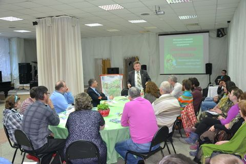 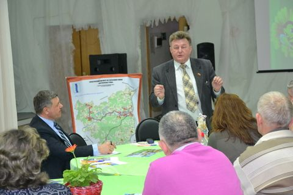 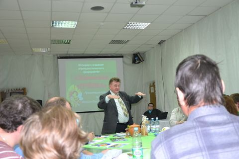Откровенная и очень интересная дискуссия по всем этим вопросам и прошла на «круглом столе». В гости к тарусским предпринимателям, работающим в сфере агротуризма, приехал профессор Российской международной академии туризма В.В. Макашин. В «круглом столе» приняли также участие и представители районной власти – глава администрации района Е.М. Мальцев и его заместители И.Н. Караулов, Р.В. Соловьёв и В.С. Трошина.
Огромную роль в проведении этого полезного мероприятия сыграл Тарусский туристско-информационный центр и его директор И.И. Павловец. Регулярно посещая выставки и мероприятия отраслевой направленности, Ирина Игоревна старается отследить интересный опыт, новые перспективные тенденции в развитии туризма с тем, чтобы потом внедрить их у нас в районе. Таким интересным опытом и оказалась встреча с В.В. Макашиным, поделившимся с довольно многочисленной аудиторией тарусских предпринимателей информацией об эффективных методах организации агротурбизнеса. Если обозначить тему его выступления кратко и ёмко, наверное, это будет так: как научиться зарабатывать деньги? Василий Васильевич познакомил участников встречи с необходимой нормативно-правовой базой, которой необходимо владеть предпринимателям, и тут же, в процессе живого общения, отвечал на их вопросы.
В «круглом столе» по вопросам развития агротуризма приняла участие тарусский педагог и краевед В.А. Губарева. За годы работы Виктория Андреевна собрала богатейший материал по культурно-историческому прошлому тарусских усадеб, сёл, деревень и готова им поделиться с заинтересованными предпринимателями. При развитии агротуристической отрасли эти знания об исторических корнях тарусской земли могут стать той самой «изюминкой», на которой, при грамотном подходе, можно построить красивый и интересный для людей бизнес.
Участники «круглого стола» поделились своим опытом работы на тарусской земле, рассказали о своих проблемах, а их, конечно, как и во всяком настоящем деле, немало, и о том, как удаётся их преодолевать. Подводя итоги встрече, глава администрации района Е.М. Мальцев отметил: для решения общих вопросов развития агротурбизнеса предпринимателям необходимо объединяться. И все с этим согласились. Наметили, что можно уже сегодня сделать для улучшения имиджевого облика Тарусы и тарусской земли в целом, как результативнее заявить о себе и своих возможностях. Хорошо бы, этот «круглый стол» стал началом дружбы и взаимного сотрудничества представителей бизнес-сообщества, работающих в сфере аграрного туризма. Сообща любые проблемы решать легче.
Статья - Г. Иванова, фото - И.И. Павловец.


{kind=link}
{kind=link}
{kind=link}
{kind=link}
{kind=link}
{kind=link}
{kind=link}
{kind=link}
{kind=link}
{kind=link}
{kind=link}
{kind=link}
{kind=link}
{kind=link}
{kind=link}
{kind=link}
{kind=link}
{kind=link}
{kind=link}
{kind=link}
{kind=link}
{kind=link}
{kind=link}
{kind=link}
{kind=link}
{kind=link}
{kind=link}
{kind=link}
{kind=link}
{kind=link}
Обучение представителей районов Калужской области по вопросам организации аграрного туристического бизнеса
Министерством культуры и туризма Калужской области на базе Калужского института туристского бизнеса (филиала российской международной академии туризма) было организовано обучение представителей районов по теме «Организация аграрного туристического бизнеса».
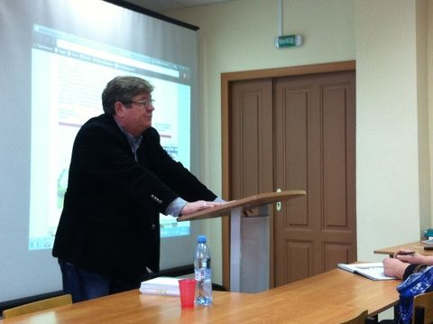 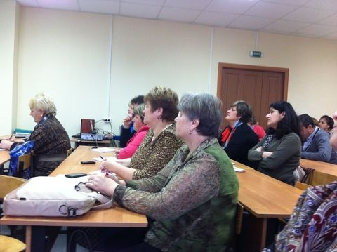 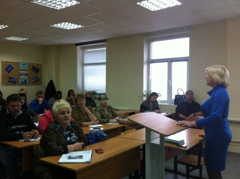{kind=link}
{kind=link}
{kind=link}
Руководители и специалисты администраций муниципальных районов, главы сельских поселений, главы крестьянских (фермерских) хозяйств, индивидуальные предприниматели и специалисты организаций туристской индустрии Калужской области прослушали первую часть курса программы повышения квалификации.
От Тарусского района курс лекций прослушали: Сазонова И. (ЛПХ д. Гурьево), Авилов Р. (ЛПХ с. Волковское), Павловец И.(директор АУ ТР по туризму «Тарусский ТИЦ»).
Лекции читали: Демишкевич Г.М. - профессор ФГБОУ ДПОС «Российской академии кадрового обеспечения АПК» (г. Москва), Макашин В.В. - доктор философии, профессор РМАТ, (г. Москва), Краснова Т.Г. - руководитель некоммерческих проектов группы компаний «Земля-СЕРВИС» и др.
Статья и фото - И.И. Павловец.
IV Международный туристический форум «Visit Russia»
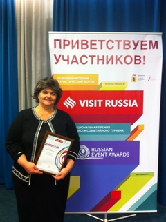{kind=link}
30-31 октября 2014 года в Ярославле прошел IV Международный туристический форум «Visit Russia». Форум был организован агентством по туризму Ярославской области, и стал одной из самых серьезных и масштабных дискуссионных площадок по обсуждению развития туристической отрасли в России. В форуме приняли участие более 500 экспертов и специалистов в сфере туризма и культуры, представители органов власти, средств массовой информации, общественных организаций и объединений из 29 регионов России и ряда европейских государств.
Главной темой форума стало развитие событийного туризма. В ходе стратегической сессии, круглых столов и презентаций, приглашенные российские и зарубежные эксперты обсудили перспективы развития этого бурно развивающегося сегмента мирового туристического рынка. Особое внимание было уделено обсуждению вопросов детского и молодежного событийного туризма, роли мегасобытий в устойчивом развитии турбизнеса, особенностей организации и проведения мероприятий, в том числе с использованием новейших IT-технологий, обеспечению эффективного продвижения туристических продуктов, работе со спонсорами. Участники поделись как уже имеющимся опытом организации и проведения крупных мероприятий для привлечения туристов, так и перспективными наработками в этом направлении.
Как отметила по итогам дискуссий первого дня форума «Visit Russia» руководитель агентства по туризму Ярославской области Юлия Ветошкина, событийный туризм может стать основой развития регионов. «Мы увидели, что события способны помочь привлечь туристический поток в районы и малые города, создать предпосылки для развития там туристической инфраструктуры».
В рамках форума прошли презентации лучших проектов событийного туризма Центрального федерального округа. Тарусский туристско-информационный центр представил фестиваль «Петухи и гуси в городе Тарусе». Директор центра - организатор фестиваля И.И.Павловец, в сопровождении видеоматериала, рассказала о детском фестивале и его особенностях. Веселый озорной праздник не оставил равнодушной профессиональную аудиторию. Прозвучало напутствие: не останавливаться на достигнутых результатах и продолжать расширять программу фестиваля.
«Представленные в Ярославле проекты представляют огромный интерес как для туристов, так и для специалистов туриндустрии», - поделился своими впечатлениями председатель Попечительского совета Премии Геннадий Шаталов. «Регионы Центральной России обладают огромным историческим, культурным и творческим потенциалом. Особенно приятно, что стали появляться по-настоящему сильные и интересные событийные проекты не только из раскрученных туристических центров и регионов, но и из маленьких городков и районов. Это значит, что событийный туризм действительно может стать локомотивом для развития территорий».
Статья и фото - И.И. Павловец.
Традиционный детский фестиваль «Петухи и гуси в городе Тарусе»
14 июня торжественно прошествовал по улицам города 4-й детский фестиваль «Петухи и гуси в городе Тарусе».
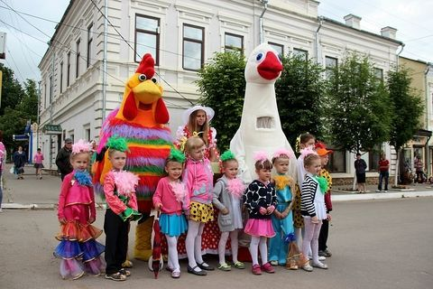 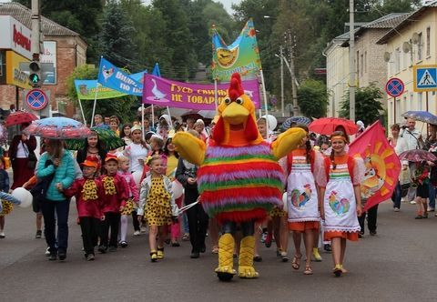{kind=link}
{kind=link}

Костюмированное шествие детей как всегда привлекло много зрителей. После красочного открытия фестиваля в киноконцертном зале прошли соревнования на тему «Чудо в перьях», в которых приняли участие команды школ города и района.


А в это время на площади Ленина дети и взрослые участвовали в традиционных конкурсах: делали соломенные фигуры; прыгали на скакалках; плели косы необыкновенной красоты; голосовали на выставке-конкурсе живых пернатых. В конкурсе «Петушок золотой гребешок» четвертый год уверенно занял первое место петух Вася из усадьбы «Дворик» Н.И.Абдулаева.
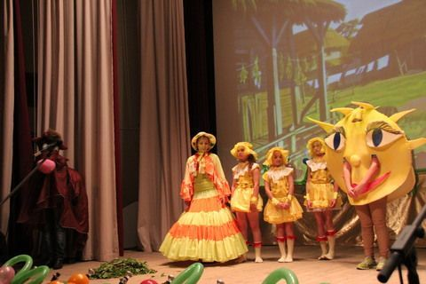 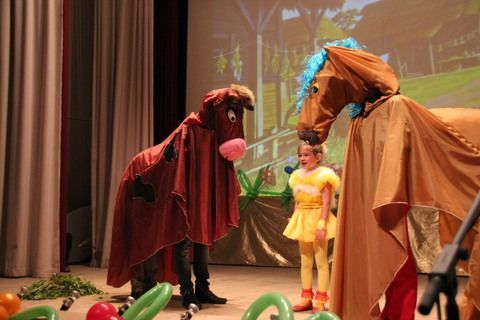{kind=link}
{kind=link}

И даже начавшийся проливной дождь не смог испортить праздник. Концертная программа и конкурсные выступления команд детских садов продолжились на сцене Киноконцертного зала.
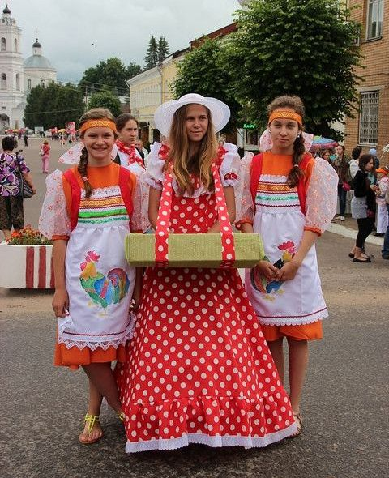 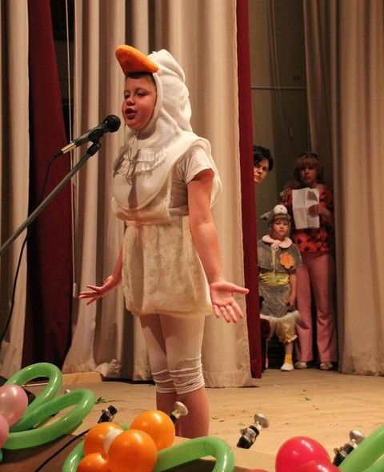{kind=link}
{kind=link}
Главный результат фестиваля – веселое настроение жителей и гостей Тарусского района. А помогли его создать школьники-волонтеры школ № 1, 2 и ПЛ-34, танцевальный коллектив «Карамельки», театр моды «Храбрый портняжка», педагоги и воспитатели школ и детских садов, специалисты Тарусского Дома Детского Творчества, работники Центра досуга населения, отдел аграрной политики администрации МР «Тарусский район», МО МВД РФ «Тарусский», МУП «Тарусажилдорстрой -Заказчик», автономное учреждение Тарусского района по туризму «Тарусский туристско-информационный центр».
4-ый детский фестиваль «Петухи и гуси в городе Тарусе» традиционно прошел при поддержке Министерства культуры и туризма Калужской области и администрации МР «Тарусский район».
На том же месте, в тот же час...
В прошедшие выходные дни сотрудники Тарусского туристско-информационного центра открыли летний сезон. 2-го и 3-его мая были проведены пешеходные экскурсии по городу для гостей Тарусы. В дальнейшем планируется каждую субботу проводить подобное мероприятие. Приглашаются жители города, а также их гости. Продолжительность экскурсии 2 часа, стоимость 150 рублей. Встреча с экскурсоводом у памятника Марине Цветаевой в 11 часов. Прогулка проходит по цветаевским местам с посещением других достопримечательностей города.
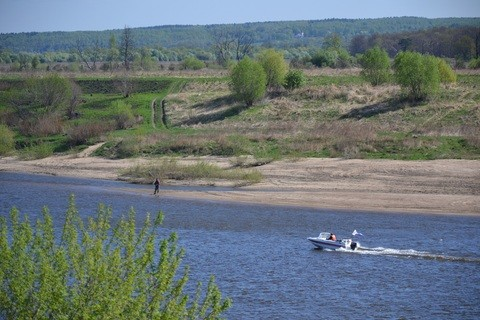 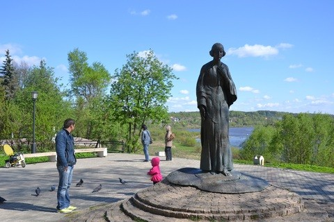 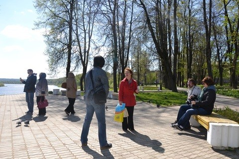{kind=link}
{kind=link}
{kind=link}
Тарусский ТИЦ так же приглашает на полюбившуюся туристам экскурсию «Тарусские усадьбы», на теплоходные прогулки на дачу С.Т. Рихтера и до села Колюпаново Тульской области (с посещением святого источника Святой Блаженной старицы Ефросиньи Колюпанской).
Телефоны для справок 8 (48435) 2-57-57, 8 (920) 092-21-48.
Выставка в Тарусском краеведческом музее
В Тарусском краеведческом музее до 10 июля продлена выставка посвященная семье Г.В. Вульф и В.В. Вульф. С 1914 года они арендовали тарусскую дачу Песочное. Георгий Викторович Вульф (1863-1925) — крупный ученый в области минералогии, кристаллографии и рентгенологии, член-корреспондент АН СССР. Вера Васильевна (1871-1923), урожденная Якунчикова, пианистка и художница. Вульфы внесли большой вклад в культурную жизнь Тарусы, благодаря их хлопотам был открыт тарусский Народный дом, где устраивались концерты с участием московских артистов и любителей музыки, а также осенние выставки художников, работавших летом в Тарусе. В голодные холодные 1919-1923 годы Вера Васильевна в Песочном устраивала «Музыкальные субботники», в маленьком домике собиралось до 70 человек послушать Баха, Бетховена, Скрябина, Меттнера. Таких субботников было проведено более 200.
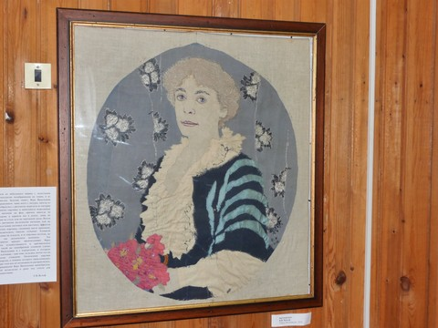 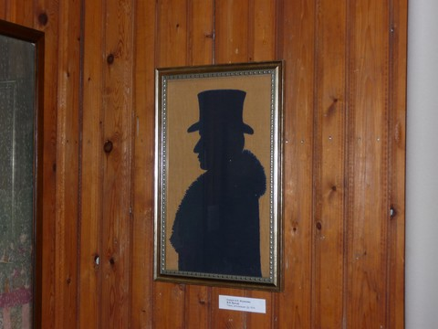{kind=link}
{kind=link}

Творчество В.В. Вульф было по достоинству оценено современниками. Её «игле» принадлежит около 100 картин и портретов. Работы участвовали в выставках «Союза русских художников» и «Мира искусства». Газета «Петербургские ведомости» писала: «Совершенно особое и своеобразное место на выставке занимает В.В. Вульф с её оригинальными картинами из тканей. Это действительно картины, вполне равные по силам масляному письму. Во всём сказывается вкус, красота и чувство меры... Несмотря на такой необычный материал, здесь вы найдете и перспективу, и свежесть тона и даже настроение...».
Похоронены Вера Васильевна и Георгий Викторович Вульфы в Тарусе на Мусатовском косогоре рядом с художником В.Э. Борисовым-Мусатовым, музей которого В.В. Вульф устроила в одной из комнат Песочного, где он жил, работал и умер в 1905 году.
На выставке представлены картины В.В. Вульф, сохранившиеся в семье, работы последних лет сделаны в Тарусе. Картины, фото, документы любезно предоставлены правнуками Вульфов Верой Владимировной Шмидт и Борисом Владимировичем Шмидт. Копия статьи Г.В. Вульфа «Как растут кристаллы» с фото предоставлены В.В. Щербаковым. Архивные документы - из фондов Тарусского краеведческого музея, столик - из фондов Тарусского музея семьи Цветаевых.
Выставка кукол
30 апреля в Тарусском краеведческом музее открылась выставка кукол, любезно предоставленных Калужским кукольным театром. Это персонажи спектаклей «Кот в сапогах», «Ищи ветра в поле», «Емелино счастье» и «Сказка о незадачливом драконе».
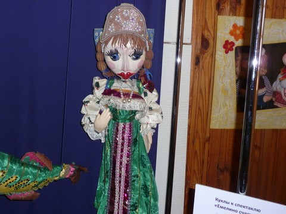 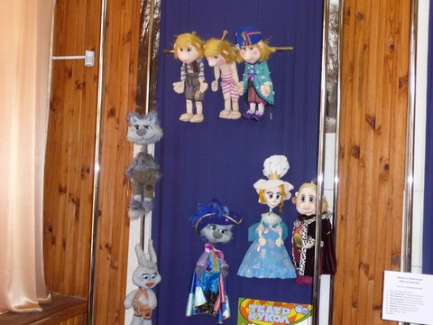 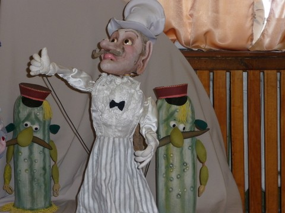{kind=link}
{kind=link}
{kind=link}
Калужский театр кукол, созданный в 1992 году, полюбился юным калужанам. Зрители ценят его не только за высокий профессиональный уровень спектаклей, но и за общую атмосферу доброжелательности и уважения, искренности и душевного комфорта.
В театре собрана большая коллекция кукол различных систем: верховых, перчаточных, планшетных кукол — марионеток. Сказочные персонажи из сошедших со сцены спектаклей становятся участниками тематических выставок, мастер-классов, театральных уроков.
Лето начинается в марте
Туризм в российских регионах - главная тема IX Международной туристской выставки «Интурмаркет 2014»
В работе «Интурмаркета» традиционно участвуют практически все субъекты федерации. Туризм в российских регионах - главная тема выставки.На «Интурмаркете были представлены стенды Калужской области. И Алтайского края,Краснодарского края и Ростовской области, Республик Коми и Адыгея, Владимирской, Архангельской и Ярославской областей, Приморского края и многих других. Регионы Приволжского федерального округа, как и в прошлом году, объединились на красочном стенде «Великая Волга», а Дальний Восток и сибирские регионы создают экспозицию «Восточное кольцо России».
{kind=link}
{kind=link}
{kind=link}
{kind=link}
Много мероприятий, посвященных внутреннему и въездному туризму, состоится в рамкх деловой программы «Интурмаркета».
Свои яркие туристические проекты представила Москва в программе - «Москва космическая», международные фестивали «Времена и эпохи», «Круг света».
Под брендом «Великая Волга» объединились 17 регионов, которые активнго взаимодействуют, продвигая совместный турпродукт.
Свердловской области представишла оригинальный продукт - «Самоцветное кольцо Урала: развитие минералогического туризма в России».
{kind=link}
{kind=link}
{kind=link}
{kind=link}
Новый проект - межрегиональную программу «Настоящая Россия» - представил исполнительный директор Ассоциации малых туристических городов России Елена Канева и журналист МИА «Россия сегодня» Юрий Щегольков. Концепция программы предполагает поездки журналистов по российской глубинке и анализ возможностей развития туризма в малых городах.
Состоялась конференция Ассоциации туристско-информационных центров, которая была создана в 2013 году. Ее цель - упорядочить и скоординировать деятельность ТИЦ, ответственных за продвижение региональных турпродуктов.
Международная выставка «Путешествия и туризм»
MITT 2014 традиционно проходит в Экспоцентре - на престижной выставочной площадке в центре российской столицы. Привлекая сотни зарубежных туроператоров и тысячи представителей туристического бизнеса из-за рубежа, именно МИТТ определяет потенциал въездного туризма и является настоящей «витриной» туристических возможностей России. На MITT приезжают «открывать Россию», поэтому участие в этой весенней туристической выставке в Экспоцентре создает неограниченные перспективы для развития туристической отрасли в российских регионах. Продвижению въездного и внутреннего туризма на выставке MITT уделяется особое внимание. В рамках международной туристической выставки MITT на протяжении всех четырех дней работы проходила обширная деловая программа, включающая конференции по актуальным вопросам туристического бизнеса, мастер-классы, семинары и консультации, презентации новых туристических направлений и услуг.
{kind=link}
{kind=link}
Наш район уже второй год на выставках достойно представляли сотрудники «Тарусского туристско- информационного центра. В этом году Тарусский стенд украсили экспонаты Нового музея Сергея Жарова.
«Капри». Остров счастья
Прошлым летом неделю отпуска молодая семейная пара из Обнинска решила провести на «Капри». Нет-нет, совсем не по следам знаменитого пролетарского писателя – буревестника Октябрьской революции.
Ребятам было не до революций. Они ждали ребёнка. Своего любимого первенца. И потому искали тихое, уединённое место среди родников и берёзовых рощ, бескрайних лугов и дальних горизонтов, вдали от изнуряющих автострад и загазованных городов, где будущая мама и малыш, который жил у неё под сердцем, могли бы наслаждаться покоем, тишиной, парным молоком, пением птиц на рассвете...
{kind=link}
{kind=link}
В наш технологичный век такой райский уголок был найден, естественно, по интернету. И вовсе не в солнечной Италии, а совсем недалеко от родного города наших героев. В Тарусском районе, на территории поселения «Село Лопатино». Здесь, неподалёку от деревни Кресты, располагается частное хозяйство Елены Ивановны Фроловой с таким нездешним и заманчивым названием, что так и тянет взглянуть на всё, что здесь происходит, собственными глазами.
Что это? Фермерское хозяйство? Объект агротуризма? Сразу и не определишь. Наверное, и первое, и второе, потому что разводят здесь животных и потому что погостить на «Ферме Капри» может любой желающий, кому это интересно. Надо только предварительно списаться-созвониться с хозяйкой. Ну, и справедливо будет сказать, что, кроме всего прочего, «Капри» - это ещё и научно-производственная лаборатория, где занимаются разведением редких, даже уникальных для нашей страны пород животных и улучшением этих пород, адаптацией их к российским условиям и скрещиванием разных пород для выявления оптимальной схемы получения многочисленного здорового и быстрорастущего потомства.
Вот это последнее – крайнее важно и интересно для производителей сельхозпродукции, работающих в животноводческой отрасли. И они, похоже, это понимают – за опытом на «Ферму Капри» едут порой из очень неблизких регионов России. Не так давно, например, приезжали со Ставрополья. Купили козлика и повезли для изучения качеств породы в сельхозинститут.
«Ферма Капри» - неофициальное название сельхозпредприятия, своего рода товарный знак. С ним предприниматель Елена Ивановна Фролова связывает определённые планы на будущее. Пока Елена Ивановна, можно сказать, в начале пути. Как это всегда бывает, на первых порах в бизнес приходится больше вкладывать, чем получать от него. Но судя по тем грамотным и обоснованным шагам, которые предпринимаются сегодня на «Ферме Капри», будущее у предприятия есть, и оно неплохое.
Хозяйка «Фермы Капри» Елена Ивановна Фролова – обаятельная женщина, добрейшей души человек. Наверное, только такой человек и может эффективно работать с животными, они ведь очень ценят в людях ласку и заботу. По образованию она биолог-биохимик, по специальности – научный работник. Работала в научно-исследовательском институте АН СССР. По её признанию, первых семь романовских овец завела у себя на даче – просто в виде хобби.
Почему овец, а не собак, например, или, скажем, столь модных нынче у привилегированных слоёв населения породистых скакунов? Сама Елена Ивановна объясняет это так. Съездила однажды на отдых в Англию, путешествовали по стране на автомобиле. Значительная часть маршрута пролегала по сельской местности. А там весь сельский ландшафт сформирован овцами. Может быть, запечатлелась картинка – этакая милая деревенская пастораль, может, самолюбие взыграло – можем ведь и мы чего-то добиться! Ну и – лиха беда начало.
{kind=link}
{kind=link}
По соседству с её подмосковной дачей было брошенное ещё с колхозных времён большое поле, по пояс заросшее сорняками. Вот этот «лунный пейзаж» и собралась облагородить Елена Ивановна, запустив туда овечек. А им вдруг там неожиданно понравилось, и приступили овцы к своей первородной обязанности – плодиться и размножаться, да так усердно, что скоро за околицей образовалась ничего себе отара! Просто сердце радовалось.
Однако радовалось оно не у всех. Подмосковье – это вам, знаете ли, не Англия и не Шотландия. Поле, вполне устраивавшее соседей в виде метрового чертополоха, перестало удовлетворять их эстетический вкус в виде пастбища. Чего греха таить, есть у нас частенько такое нехорошее стремление – заглянуть в горшок к соседу. Чего это у него каша гуще? Жалобу куда следует!..
Елена Ивановна спорить не стала. Купили с мужем участок земли в Тарусском районе соседней Калужской области. Так «Ферма Капри» обрела новую прописку и новую жизнь, неожиданно заигравшую яркими красками. А наш район приобрёл интересный объект сельской жизни.
Участок они нашли в 2008 году – его продавали как объединённые паи. Возможно, именно здесь, в Тарусском районе, супруги Елена Ивановна Фролова и Пётр Михайлович Чумаков (он, кстати, по профессии врач) поняли, что всё зашло далеко и глубоко – это уже не просто хобби, они стоят на пороге нового для них дела, серьёзного бизнеса. И не побоялись в него окунуться.
К тому времени овцеводство в средней полосе России чуть теплилось. Как отрасль животноводства оно было признано нерентабельным, поскольку совершенно не было спроса на шерсть и овчину, а на одном мясе, пусть даже экологически чистом, полезном для потребителя, производство не удержишь. Поголовье овец в хозяйствах разных форм собственности постепенно сошло на нет. Были времена, когда баранины на рынках было днём с огнём не сыскать. Между тем в мире овцеводческая отрасль в упадок никогда не приходила. Наоборот – там шла непрерывная селекция новых продуктивных пород, в том числе мясных пород животных. Вот на эти новые продуктивные породы и решили сделать ставку на «Ферме Капри». В 2010 году сюда были завезены производители трёх мясных пород из США: Дорпер, Белый Дорпер, Иль де Франс. Надо отметить, мероприятие влетело в копеечку. Точнее будет сказать, в доллар. Но оно того стоило. Заокеанские бараны как-то очень понравились романовским овечкам. Дальше – всё как у людей. Так на тарусской земле появилось овечье стадо уникальных мясных пород, а на «Ферме Капри» с 2010 года началась планомерная селекционная работа.
- Сегодня мы работаем над тем, чтобы получить стадо «идеальных» маток, - говорит Елена Ивановна. – От материнской романовской породы они берут такие ценные качества, как многоплодность и способность приносить потомство в любой сезон. А по отцовской линии наследуют повышенные мясные качества – на 10-15 процентов больше мяса по отношению к костям, чем у овец романовской породы. Бараны-производители попались очень эффективные – у них повышенная устойчивость к внутренним паразитам, а это для овец – большая проблема, и они передают это качество потомству.
Сегодня в сельхозпредприятии «Ферма Капри» выращивают овец как на мясо, так и на племя. Здесь около 650 овцематок и только полторы сотни из них романовские. Остальные – предмет вдумчивой и кропотливой селекционной работы. Той самой работы, которой вообще-то занимаются фермеры во всём мире и которая, верит Елена Ивановна, в будущем будет очень востребована в России. В 2012 году на «Капри» завезли ещё одну продуктивную породу из США – ост-фризских овец. Это уникальная порода, ост-фризские овцы – молочные. Они хорошо скрещиваются с другими породами и хорошо передают приплоду свои молочные качества. Известно, что наличие большого количества молока у овцематки – залог хорошего роста ягнят. Кроме того, порода применима для производства овечьего молока и сыра – с этим Елена Ивановна также связывает определённые планы.
Я неслучайно начала свой рассказ о «Ферме Капри» с молодой пары, решившей приобщить своего будущего ребёнка к красотам сельской жизни. Оказывается, это становится модной тенденцией – молодые родители из больших городов, не всегда имеющие для таких целей деревенских бабушек и дедушек, везут своих малышей на такие вот «островки счастья», как «Капри». Туда, где можно покувыркаться в сене, погладить козочку, подразнить драчуна-петуха, а потом улепётывать от него врассыпную!.. И это – ещё одно перспективное направление развития для «Фермы Капри». Не так давно здесь появились бурские козы с длинными шелковистыми ушами. Появились они, конечно, не только в декоративных целях – но видели бы вы этих красоток! Ни один агротурист не устоит.
По осени, кстати, пятнадцать вислоухих «бурок» решили прогуляться по лесу. Отбились от дома и заблудились – да так, что искали их всем хозяйством неделю! Елена Ивановна расстроилась жутко. Мало того, что каждая коза – золотая, так они ещё все и беременные! Думали уже всё, сварил кто-нибудь из бродяг тушёнку… Но нет, повезло красоткам. Вышли на подворье к добрым людям – аж в Петрищеве! А те поохали от изумления – что за чудо вислоухое к ним во двор забрело – да и нашли хозяйку. Такая вот счастливая история.
В скором времени приедут в тарусские края и альпаки – грациозные животные с изумительной, мягкой шерстью, родина которых – Южная Америка. Как показывает практика, к российским условиям адаптируются они тоже весьма неплохо. Елена Ивановна и Пётр Михайлович мечтают о том, чтобы «Ферма Капри» стала со временем Центром породного разнообразия. И все предпосылки к этому есть уже сегодня.
Тарусскую землю от Лопатина до Барятина и дальше Елена Ивановна называет историко-ландшафтным оазисом, пока ещё незначительно тронутым застройкой. Вот бы сохранить его в этой первозданности! Сохранить пока ещё не до конца исчезнувшие следы былой жизни людей, стремительно утрачиваемую гармонию русского быта наедине с природой, так хорошо знакомую многим из нас с детства. Знакомая нам, достанется ли она нашим внукам? По мнению Елены Ивановны, сейчас в связи с ростом интереса к агротуризму и в связи с запретом перевода сельхозземель под строительство шанс такой появился. И значит, в ближайшей перспективе надо установить хотя бы таблички на месте существовавших когда-то, но исчезнувших теперь тарусских деревень. Как память о том, что здесь, в этих полях, когда-то жили люди. А память – она ведь живая. Глядишь, живое к живому и потянется.
Калужский туристский форум
29 ноября в Культурно-образовательном центре ЭТНОМИР (Боровский район) состоялся третий Калужский туристский форум. Около трехсот человек съехались из разных уголков нашей страны, чтобы обсудить Стратегию развития туризма в Российской Федерации. В работе форума приняла участие делегация из Тарусы .В ее состав вошли сотрудники администрации МР «Тарусский район», Тарусского туристско-информационного центра, предприниматели. На пленарном заседании выступили: Губернатор Калужской области А.Д.Артамонов, начальник управления государственных туристских проектов Федерального агентства по туризму А.А. Сирченко, Министр культуры и туризма Калужской области А.И.Типаков.
{kind=link}
{kind=link}
{kind=link}
Темы, которые обсуждались на форуме актуальны и для Тарусского района: «Формирование туристско-рекреационных кластеров», «Перспективы развития сельского туризма в России», «Событийный туризм: фестивали, как инструмент развития событийного туризма».
Организатор форума - Министерство культуры и туризма Калужской области.
Семинар по агротуризму
25 ноября 2013 года Тарусский туристско-информационный центр провел семинар для жителей района на тему: «Государственная поддержка развития агротуризма». Представители банка-партнера Министерства сельского хозяйства Российской Федерации рассказали о специальных программах кредитования, которые позволяют начать или развить уже имеющийся бизнес по приему туристов в сельской местности. Особый интерес участников семинара вызвали программы субсидирования процентной ставки. Сотрудники банка рассказали также о мерах, предусмотренных Государственной программой по поддержке сельскохозяйственных товаропроизводителей, развитию инженерной инфраструктуры сельских территорий, развитию несельскохозяйственной деятельности в сельской местности, развитию сельскохозяйственных потребительских кооперативов и др.
{kind=link}
{kind=link}
Директор Тарусского туристско-информационного центра Павловец И.И. ознакомила участников семинара с порядком предоставления Государственных субсидий на развитие материально-технической базы в рамках долгосрочной целевой программы «Развитие внутреннего и въездного туризма»" на территории Калужской области на 2011-2016 годы и раздала методический материал по ведению аграрного туризма.
Консультацию по всем вопросам, обсуждавшимся на семинаре, можно получить у сотрудников Тарусского туристско-информационного центра (тел 8-48435-2-57-57).
Наши гости становятся нашими друзьями!
14 октября 2013 года по инициативе Тарусского туристско-информационного центра был организован рекламный тур «Таруса творческая» для представителей турбизнеса Москвы, Протвино, Серпухова. Главной задачей организаторов было показать обновленную Тарусу, туристические объекты, появившиеся за последние годы. Предполагалось посетить шесть баз отдыха, два музея и завод по выпуску керамических изделий ООО «Тарусский художник». Также была запланирована экскурсия по городу.
{kind=link}
{kind=link}
Организаторы встречали гостей в Москве. По дороге в Тарусу представителям туристического бизнеса рассказали о работе Тарусского туристско-информационного центра, о направлениях развития туризма в районе, а также показали фильм о Тарусе. Неформальное общение в пути помогло всем познакомиться друг с другом, и к моменту приезда в Тарусу в автобусе сформировалась дружная компания единомышленников.
Гости посетили дом отдыха «Серебряный век», который радушно встретил пирогами, и пансионат «Якорь», где посетителям показали новое, недавно построенное кафе. По пути в гостиницу «Таруса» делегация совершила прогулку по набережной. Большой интерес вызвало посещение Нового музея Сергея Жарова и музея К.Г.Паустовского, работники которого, несмотря на выходной, с радостью встретили участников рекламного тура и показали экспозицию. В фирменном магазине ООО «Тарусский художник» представители туриндустрии, как самые обычные туристы, выстроились в очередь за керамикой и неподдельно радовались покупкам.
В конференц-зале отеля «Welna» состоялась встреча участников рекламного тура с главой администрации МР «Тарусский район» Е.М.Мальцевым, который ответил на все интересующие гостей вопросы. Представители Тарусского туристско-информационного центра провели презентацию на тему: «Таруса как площадка развития событийного туризма». После обеда гостям показали коттеджи и гостиничные номера отеля.
Завершился рекламный тур посещением спортивно-оздоровительного комплекса «ОТЭК «Таруса» и базы отдыха «Солнечная на Оке».
Программа тура была насыщенной и напряженной, красота Тарусской земли смогла покорить сердца гостей. Хочется надеяться, что проведенная работа принесет свои плоды и поток туристов, желающих посетить Тарусу, будет увеличиваться год от года.
Статья и фото - И.И. Павловец.
Таруса участвует в обсуждении роли туристско-информационных центров России
Калининградская область 2-5 октября стала местом проведения Второй межрегиональной практической конференции на тему: «Роль туристско-информационных центров в формировании информационного пространства. Алгоритм функционирования системы ТИЦ в Российской Федерации».
{kind=link}
{kind=link}
Важность туристско-информационных центров возрастает по мере изменения структуры туристического потока. Общемировые тенденции увеличения числа людей, путешествующих индивидуально, обуславливают необходимость наличия и эффективное функционирование в каждом субъекте РФ специальных структур, которые были бы ориентированы на информационное обслуживание приезжающих туристов.
Вот уже два года, как в нашем городе создан Тарусский туристско-информационный центр. И мы тоже получили приглашение для участия в конференции.
Официальное открытие конференции состоялось 3 октября в Калининграде. Министр по туризму Калининградской области Марина Агеева отметила, что мероприятие проводится при поддержке Министерства культуры РФ.
Во время заседаний, круглых столов и семинаров обсуждалась роль туристских информационных центров в продвижении России в целом и отдельных регионов как привлекательных туристских территорий.
Вся работа конференции была нацелена на то, чтобы обменяться опытом в деле информирования туристов, обсудить общие проблемы. Ведь создание комфортной среды для туристов достигается, в том числе, и информационными центрами. Другие вопросы – это городская пешеходная навигация для туристов, а также гостеприимство местных жителей.
Для более продуктивной работы мы искали разные формы взаимодействия, ориентируясь на различные аудитории. Изучали не только российский, но и зарубежный опыт создания и функционирования системы туристских информационных центров и пунктов предоставления информации.
Были озвучены проблемы, которые, как оказалось, очень похожи во всех городах, где туризм выбран как приоритетное направление экономики. Например, сохранение уникального облика городской территории. Города становятся похожими друг на друга. За рекламными растяжками и рекламой сетевых магазинов теряют свой исторический облик и индивидуальность. А национальная черта – русское гостеприимство не всегда проявляется у местного населения по отношению к туристам, очень часто они вызывают только заслуженное раздражение. Решение этих вопросов возможно только совместными усилиями местных властей и туристической индустрии. Некоторые информационные центры жаловались на отсутствие понимания со стороны местной администрации. Кто-то имеет серьезные разногласия с местным туристическим бизнесом. У нас таких проблем нет. Но есть часть вопросов, которые мы только пытаемся решить, а в других городах это давно уже пройденный этап. Учиться никогда не поздно. Великий Новгород, Углич, Паланга (Литва), Елизово рассказывали, как они взаимодействуют с властями и турбизнесом, распределяют зоны ответственности. Казань делилась опытом проведения международных мероприятий (включая Универсиаду). Одно из самых крупных информационных агентств – РИА «Новости» сообщило о современных способах продвижения в туризме.
В ходе обсуждений во время деловой части программы участники конференции выработали общие подходы в деятельности ТИЦ на территории России. Согласованная, координируемая деятельность подобных центров туристической информации позволяет формировать единое информационное пространство, включая продвижение единого бренда России как туристической дестинации.
Среди важнейших направлений практического взаимодействия ТИЦ участники особо отметили обмен опытом создания и функционирования ТИЦ и создание Единой организации, объединяющей ТИЦ Российской Федерации, создание электронной информационной площадки ТИЦ, разработку совместных трансграничных турпродуктов.
Все гости отметили высокий профессионализм у наших калининградских коллег. Каждый путешественник с первых шагов окружен вниманием и поддержкой в любую минуту пребывания на их территории. Уже в аэропорту его встречает информационный стенд с приветливой девушкой, которая бесплатно ответит на все вопросы: как доехать до города, где разместиться на проживание, какой выбрать маршрут путешествия и какие культурные мероприятия проходят в городе. Весь период пребывания на отдыхе специалист центра с мобильного телефона будет сопровождать туриста. С его помощью можно заказать такси, экскурсию и даже столик в ресторане. Приятно удивили цены. В хорошей гостинице Калининграда европейского уровня стандартный номер на двоих с завтраком стоит от 1600 руб. до 2400 руб. Конечно, есть и дорогие номера класса люкс. Турист выбирает сам, в зависимости от своих финансовых возможностей.
Такие встречи дают хороший импульс для работы. Вернувшись домой, очень хочется сделать все для того, чтобы каждый гость, приезжая, чувствовал себя комфортно и увез с собой частичку теплоты и тарусского гостеприимства.
Статья и фото - И.И. Павловец.
II Международный форум «Сельский туризм в России»
3-4 августа 2013 года в Белгороде прошел II Международный форум «Сельский туризм в России», в котором приняли участие представители порядка 40 российских регионов. Кроме россиян своим опытом в сфере развития сельского туризма делились эксперты из Украины, Словакии, Польши, Литвы, Латвии, Молдовы, Эстонии, Беларуси и др.
{kind=link}
{kind=link}
{kind=link}
Благодаря этому форуму налаживаются деловые связи между российскими регионами и странами, имеющими богатый опыт в развитии туристического бизнеса.
В ходе работы различных секций форума его участникам и гостям удалось обсудить перспективы развития сельского туризма, обменяться опытом, сравнить законодательную базу, регламентирующую данной сферу экономики в разных странах, обсудить роль сельского туризма в сохранении и развитии сельских территорий, выявить способы продвижения сельского туризма на внутренних и мировых рынках.
{kind=link}
{kind=link}
{kind=link}
Участники и гости II Международного форума «Сельский туризм в России» получили возможность встретиться с предпринимателями Белгородской области и ознакомиться с результатами их работы в сфере сельского туризма.
От Тарусского района в работе форума принял участие Тарусский туристско-информационный центр, представивший экспозицию, посвященную развитию сельского туризма в районе. Администрация МР «Тарусский район» была награждена медалью «За достижения в развитии сельского туризма».
Статья и фото - И.И. Павловец.
«Петухи и гуси в городе Тарусе»
Говорят, та самая «девочка Маруся» из знаменитого стихотворения Николая Заболоцкого «Городок» жила по соседству с поэтом на улице Либкнехта, по-старинке до сих пор именуемой тарусянами Даниловкой. И петухов и гусей в то время в Тарусе действительно держали чуть ли не в каждом дворе. Вот такой Маруся – может, реальная девочка, может, собирательный образ – и вошла в историю: печальной, мечтающей обрести крылья да и улететь от тихой, неспешной, скучной жизни в провинциальном городе...
С тех пор многое изменилось. Таруса давно заняла свое почетное место на всех культурных и туристических картах России. А строки стихотворения стали настолько известными, что дали название детскому фестивалю, вот уже третий год проходящему на тарусской земле. Фестивалю уникальному, имеющему свой особый, местный колорит. Его организаторы надеются, что со временем он встанет в один ряд с Цветаевскими и Паустовскими праздниками, фестивалем Фонда Святослава Рихтера и будет ещё одной визитной карточкой нашего города.
Так что не скучай, Маруся! Бери с собой собачку с маленькой бородкой – и скорее беги в город. Сегодня в Тарусе яркий, многолюдный детский праздник — ещё одно значимое событие этого лета.
В первый день фестиваля дети, отдыхающие в летних школьных лагерях, готовилась к празднику: играли в традиционные народные игры на площадках, проводили веселые соревнования и занятия. Второй, самый насыщенный, фестивальный день начался 15 июня с костюмированного шествия детей и взрослых от двух городских школ к киноконцертному залу. На это время исторический центр города буквально окрасился в яркие жёлто-оранжевые тона!
Под предводительством Петуха и Гуся – главных героев фестиваля и вожаков детворы – две колонны встретились у светофора на перекрёстке улиц Ленина и Луначарского, чтобы слиться в весёлый, шумный поток. Настоящий парад пернатых: «цыплята», «утята», «гусята», «петушки» и «курочки» — от совсем малышей до взрослых «гусынь» и «наседок». Прохожие – свидетели этого действа просто не могли сдержать улыбку – до чего же все они были хороши! Держа транспаранты с «куриными» лозунгами и множество воздушных шариков, скандируя речёвки и считалки, «птичий десант» прошагал по дороге, где движение на это время было перекрыто, и скрылся в киноконцертном зале.
Здесь, в фойе, уже работала выставка творческих работ — разнообразные техники, настоящее мастерство и полёт фантазии. Главной её темой, конечно, стали пернатые: целый птичий двор с пушистыми цыплятами, яркими петухами и курушками-наседками, сделанный детскими руками и потому несущий особую теплоту.
Конкурсную программу школьных команд открыл и.о. главы администрации МР «Тарусский район» Е. М. Мальцев, порадовавшийся, что из года в год фестиваль становится всё более массовым, при этом оставаясь именно тарусским, уникальным явлением. Евгений Михайлович пожелал детям удачи в конкурсе и хорошо отдохнуть этим летним солнечным днём.
Трогательную историю Гадкого утёнка, которому суждено было стать прекрасным лебедем, рассказали в танце коллективы «Карамельки» и «Храбрый портняжка». А на сцене одна за другой появлялись школьные команды. Дети из Волковского, команда «Птицы Надежды» инсценировали жизнь птичьего двора и цыплят Пипа, Пика и Филиппа, вернувших отцу-петуху его «ку-ка-ре-ку». «Цыплята» из Лопатина рассказали сказку о золотом яйце, в финале которой дед стал не кем-нибудь, а царём. Вознесенские «Цыплята» задорно спели песню про чудо-лето и не забыли про свою школу, сказав о ней слова благодарности. «Гуси-лебеди» из Некрасова подготовили постановку одноимённой сказки с неожиданным финалом: хулиганы-гуси раскаялись в своих поступках и ушли от Бабы Яги жить к мужику и бабе. Команда ТСШ № 2 «Куриная семья» заставила поволноваться за цыплёнка, которого хотела утащить кошка, но в итоге всё сложилось хорошо. И третьи по счёту на сцене «Цыплята» из ТСШ № 1 поведали эпопею только что вылупившегося цыплёнка, который ушел «искать своих» и, наконец-то, нашёл! В этом году дебютантом конкурса выступил детский сад «Солнышко» - команда «Дружная семейка», передавшая всю веселую и хлопотливую жизнь птичьего двора. Малышам помогала танцевальная студия «Радуга».
Конечно, жюри пришлось непросто: дети очень старались, много готовились и репетировали. Но вот оно, подведение итогов и радостная суматоха на сцене: в номинации «Творческая работа» первое место – у детского сада «Солнышко», второе – ТСШ № 2 и третье – ТСШ № 1. Дипломами жюри отметило Веронику Баландинскую, Арину Щетинину и Егора Гордикова, чья работа была признана лучшей единогласно. Диплом лучшего капитана команды был вручён Арине Алтунян, в номинации «Лучшая артистическая роль» победила Арина Исаева, Кошка, лениво поигрывающая хвостиком, в её исполнении никого не оставила равнодушным.
Вместе с денежными сертификатами, выделенными организаторами фестиваля для подготовки к фестивалю следующего года, все команды получили подарки. Третье место в номинации «Выступление» решено было не присуждать. Второе место разделили команды Некрасова и ТСШ № 2. И первое место – у ребят из ТСШ № 1. Все молодцы! В отдельной номинации от движения «Матери России» были отмечены малыши из детского сада «Солнышко», также получившие подарки и денежный сертификат.
Также жюри отметило танцевальную композицию двух детских коллективов - «Карамельки» и Театра моды «Храбрый портняжка» и семью Машковых – за совместную творческую работу. В следующем году все тарусские семьи смогут поучаствовать в конкурсе отдельной номинацией – присоединяйтесь к «пернатому движению»!
А на городской площади детей ждали развлечения и конкурсы, занятия, мастер-классы — в общем, всё то, что так нравится юным тарусянам. Июньское солнце беспощадно жарило с небес, но детворе всё было нипочём – площадь гуляла и веселилась. Выстроились в ряд столы для мастер-классов, проводимых тарусскими и приезжими мастерами народного творчества. Дети могли познакомиться с ткацким ремеслом, плетением из трав и цветов, техникой рисунка восковыми мелками и многим другим – свободных мест у столиков не было. Рукотворная красота буквально заполонила эту часть площади: всевозможные обереги, украшения, берестяные плетёнки, картины, глиняная посуда и панно, игрушки – кажется, из всех возможных природных материалов. У одного из заезжих купцов-молодцов — настоящее детское столпотворение: здесь продаются расписные свистульки-птички, выдающие из своих горлышек соловьиные трели...
Был на фестивале и настоящий гусляр Любослав (Александр Субботин), даривший слушателям свое уникальное, редчайшее для нашего времени искусство. Резные гусли – красивый и по виду, и по звучанию музыкальный инструмент – музыкант сделал когда-то сам из остатков немецкого рояля «Шредер». Эскиз ему подарил знакомый преподаватель музыкального училища, руководитель детского ансамбля гусляров. Но те гусельки были поменьше, крыловидные, а гусли Любослава – так называемые трапециевидные, поющие сочным, громким, глубоким звуком. Здесь и струн больше. Такие гусли можно увидеть на картине Васнецова «Гусляры» - инструмент древний, исконно русский. На гусельном ремне — три валдайских колокольчика, для чистоты и гармонии звука. Любослав – музыкант-странник, путешествующий по всей России. Часть песен он собирает, часть – пишет на стихи известных поэтов, часть – на свои собственные. «Я рад быть сегодня в Тарусе, - сказал гусляр, - хорошо, что люди возрождают народные праздники, вновь обретают традиции. Они сегодня очень нужны: живое общение, творчество объединяют людей и дарят им радость».
Гуляние шло своим чередом. Неутомимые лошадки и ослик катали по площади детей, встречали своих лихих прыгунов батуты. Чуть поодаль, подустав от гомона и жары, под присмотром своих хозяев сидели в клетках петухи да гуси настоящие. Они явно мечтали спрятаться в тени и тишине, но им, как главным героям фестиваля, предстояло участвовать в конкурсе красоты «Петушок – золотой гребешок». Победителями среди гусей стали гуси белгородские (хозяин – Надир Абдулаев, СП «Деревня Похвиснево»). Собственно, конкурентов им и не нашлось. А среди петухов и кур лучшими по итогам зрительских голосов были признаны Чук и Гек, два цыпленка-подростка породы голошеие (хозяин — И. А. Домбровский, г. Таруса). Второе место – у золотистых и пёстрых брам (Н. Абдулаев).
В конкурсе «Русская краса – девичья коса», собравшем девчонок – обладательниц роскошных волос, победительницей вновь, как и в прошлом году, стала Варвара Машкова. Её коса почти метр в длину – 95 сантиметров! Второе место у Юли Черняковой (60 см), третье – у Вари Коленовой (57 см).
Все победители, в том числе и в конкурсах скакалок и соломенных чучел, получили дипломы и сувениры. А на площади завертелась весёлая круговерть концертной программы: к «птенцам» из кинотеатра присоединились и другие артисты. Скучать никому не пришлось – ни детям, ни взрослым! К завершающему событию дня - «Воробьиной дискотеке» остались самые стойкие. Фестиваль «Петухи и гуси в городе Тарусе» подходил к концу.
В этот день в Тарусе было замечено немало туристических автобусов. Директор Туристического центра – главного организатора фестиваля – И. И. Павловец рассказала, что еще в прошлом году тарусский фестиваль заметили в области, в этом же году Министерство по туризму выделило на его проведение дополнительное финансирование. Это значит, что у фестиваля появились дополнительные возможности и перспектива хорошего развития, может, даже – возможность встать в Российский событийный календарь.
И – как по заказу, все-таки дав площади вдоволь нагуляться и навеселиться – на город обрушился дождь с грозой. Не иначе как сам хозяин праздника – Петушок, древний символ победы света над тьмой, пробуждения, солнца – своим пением весь день отгонял от города тучи.
Ольга КОЛЕНОВА.
Фото автора.
Других посмотреть и себя показать
Во второй половине марта в Москве на центральных выставочных площадках прошли две главные международные выставки России по туризму. Впервые на выставках подобного масштаба силами Тарусского Туристско-информационного центра был представлен туристический потенциал Тарусского района.
{kind=link}
8-ая международная туристская выставка «Интурмаркет 2013» проходила в МВЦ «Крокус Экспо» с 16 по 19 марта. Участниками выставки стали представители более, чем 140 стран и регионов России.
Традиционно привлекали внимание посетителей яркие самобытные выставочные площадки Алтайского, Краснодарского краев. На стенде Липецкой области мастерицы из г. Ельца плели кружева по старинной технологии. Приятно было видеть наших соседей - Тульскую область.
От Калужской области в выставке участвовали: Тарусский туристско-информационный центр, представители Боровского района, Козельское бюро экскурсий и путешествий, горнолыжный курорт «Квань», Калужская гостиница «Амбассадор», туристическая компания «Калуга-лэнд» .
Выставка нашего района привлекала к себе внимание изделиями Тарусских мастеров. Тарусские девушки демонстрировали изделия фабрики Тарусской вышивки, а уникальные работы из керамики не оставили равнодушными посетителей. Бренд - «Таруса творческая» на выставке подтвердила Вероника Елизарова - известная Тарусская художница. На глазах у посетителей из серенького комочка глины рождались уникальные художественные произведения, достойные занять свое место в любом музее искусств.
Для привлечения большего внимания, в день открытия выставки на презентационной площадке несколько раз в течение дня звучала концертная программа Тарусских артистов. В исполнении Любаши Денисенко звучали детские песенки. По павильону разносился звонкий детский голосок, приглашая приехать в Тарусу на замечательный детский фестиваль «Петухи да гуси в городе Тарусе». В подтанцовке у юной артистки были Петух и Гусь, роли которых с выдумкой и особым озорством, присущим характерам своих персонажей, исполнили учащиеся ПЛ - 34 Владимир Долматов и Максим Кошкин. Это выступление, несомненно, придало дополнительный колорит экспозиции района. В перерывах между выступлениями Петух и Гусь неустанно позировали для фото с гостями на память. В разные концы земного шара посетители выставки увезли фото на память о Тарусе.
Посетители были разные. Кто-то подходил к стенду Тарусского района с улыбкой, как к старым знакомым, а кто-то впервые слышал о нашем крае. Елизавета Климова и Нина Симарёва с удовольствием рассказывали об истории города Тарусы, районных и городских достопримечательностях, о музеях и храмах, о народных умельцах, художниках, о приветливости и гостеприимстве жителей, о живописности нашей природы, вдохновившей на создание шедевров не одно поколение поэтов и художников. Рекламировали отдых в гостиницах, пансионатах, домах и базах отдыха, находящихся в Тарусском районе. На память посетители нашего стенда могли взять с собой буклет «Таруса», который был издан специально для выставки. Большим интересом у специалистов пользовался «Календарь туристических событий». В последний день работы павильон посетил Председатель Правительства России Д.А. Медведев.
20-ая Московская международная выставка «Путешествия и туризм» проходила в ЦВК «Экспомир» с 20 по 23 марта. На выставке завязались деловые связи с представителями туристического бизнеса, что послужит основой для развития туризма в Тарусском районе будущем. До последнего дня работы выставки у стенда Тарусы продолжались переговоры.
Для участия в выставках такого уровня требовалась серьезная подготовка. В этом Тарусский туристско-информационный центр поддержали представители туристического бизнеса района. Кто как не они заинтересованы в первую очередь в продвижении Тарусы. Руководители туристических объектов района на деле подтвердили свою заботу о развитии родного края. Большую помощь в организации выставок оказали: Л.В.Шуклина (пансионат «Якорь»), В.В.Коханюк (ОТЭК Таруса),В.В.Черняев (база отдыха «Солнечная на Оке»),В.В.Серегин (база отдыха «Янтарь»), А.Б.Триченков (гостинца «Таруса»),А.А.Сергеев (дом отдыха «Серебряный век»), О.А.Ильюшкин (усадьба «Отрада»).
Участие в мероприятиях такого рода, несомненно, полезно для развития туризма в районе. Ни Интернет, ни высокие информационные технологии не смогут заменить теплоту улыбок, дружеское рукопожатие и искренность живого слова.
Статья и фото - И.И. Павловец.
{kind=link}
{kind=link}
{kind=link}
{kind=link}
{kind=link}
{kind=link}
Тарусские школьники на фестивале «Типифест»

Группа Тарусских школьников приняла участие в фестивале «Типифест», который проходил с 13 по 21 октября 2012 на территории Боровского района в «Этномире». Эту поездку организовал Тарусский туристско-информационный центр за активное участие в фестивалях и праздниках . Программа фестиваля была очень насыщена. Ребята познакомились с культурой коренных народов Северной Америки. Каждый смог попробовать свои силы в стрельбе из лука, посетить традиционное жилище североамериканских индейцев - типи, в котором вождь краснокожих не только объяснил различие между вигвавом и типи, но и поведал легенду о том, чем ковбои отличаются от индейцев, рассказал о жизни на диком Западе, традициях и обычаях индейцев.
Все посетители «Этномира» в этот день получили уникальную возможность встретиться, получить автограф и сфотографироваться с легендарным Гойко Митичем - самым известным актером-исполнителем ролей индейцев в десятках фильмов.
На память о поездке каждый увез с собой сувенир – «Ловец снов», который был сделан своими руками из природных материалов с соблюдением традиций культуры столь далекого к нам народа Северной Америки, теперь такого близкого благодаря «Этномиру».
Статья и фото - И.И. Павловец
II Калужский туристский форум «Kaluga Discovery»
26 октября в культурно-образовательном и туристическом центре «ЭТНОМИР» в Боровском районе губернатор области Анатолий Артамонов принял участие в открытии II Калужского туристского форума «Kaluga Discovery».
Обсуждался опыт и перспективы формирования туристско-рекреационных кластеров в регионе, вопросы развития агротуризма, а также состояние дел в кадровой сфере отрасли. Речь также шла о повышении конкурентоспособности калужских туристических объектов на рынке внутреннего и международного туризма.
Отмечалось, что в настоящее время в состав туристско-рекреационного комплекса области входят 65 организаций коллективного размещения туристов. Из них 48 гостиниц и 17 организаций специализированного назначения – санаториев, профилакториев, баз отдыха. Все они способны одновременно принять более шести с половиной тысяч человек.
Наиболее перспективным направлением для области является аграрный туризм. По состоянию на начало текущего года в регионе функционируют 102 субъекта аграрного туризма, способных принимать около 60 тысяч туристов ежегодно.
Традиционно большой популярностью среди гостей региона пользуются духовные центры, расположенные на территории области - Оптина Пустынь и Шамординский монастырь в Козельском районе, Свято-Георгиевский мужской монастырь в Мещовске. В текущем году область планирует принять более 1 миллиона туристов. Это практически вдвое превышает уровень трехлетней давности.
Говоря о необходимости более активного развития региональной туриндустрии, Анатолий Артамонов обратил внимание на то, что одним из базовых условий для решения этой задачи является привлечение инвесторов, а также параллельное совершенствование дорожно-транспортной сети, гостиничного и ресторанного бизнеса. «Мы готовы к открытому диалогу с каждым инвестором и будем продвигать их интересные идеи в сфере туризма», - подчеркнул губернатор.
В рамках форума состоялось подписание соглашения о сотрудничестве между Ростуризмом и Правительством области. Документ предусматривает совместную деятельность по реализации мероприятий федеральной целевой программы «Развитие внутреннего и въездного туризма в РФ на 2011-2018 годы».
В этот же день губернатор области Анатолий Артамонов и первый вице-президент «Газпромбанка» Александр Казначеев подписали соглашение о взаимовыгодном сотрудничестве по дальнейшему социально-экономическому развитию калужского региона. Документом предусмотрено обеспечение населения области широким спектром высокотехнологичных банковских услуг, возможность финансирования «Газпромбанком» инвестиционных проектов и программ государственно-частного партнерства, в том числе в туристической отрасли.
Управление по работе со СМИ администрации губернатора Калужской области
В ПОМОЩЬ ТУРИСТАМ
Уважаемые гости Тарусы!
В помощь вам в центре города, возле автостанции, и на берегу р.Оки, у пристани, установлены информационные щиты, которые помогут вам получить всю необходимую информацию о туристических объектах как города, так и района. Информация представлена в виде карты, на которой обозначены населенные пункты и дороги, водоемы и пляжи, пункты питания и базы отдыха, магазины и транспортные стоянки. Любой турист сможет без труда определить местоположение культурных и исторических достопримечательностей: храмов, музеев, памятников, усадеб.